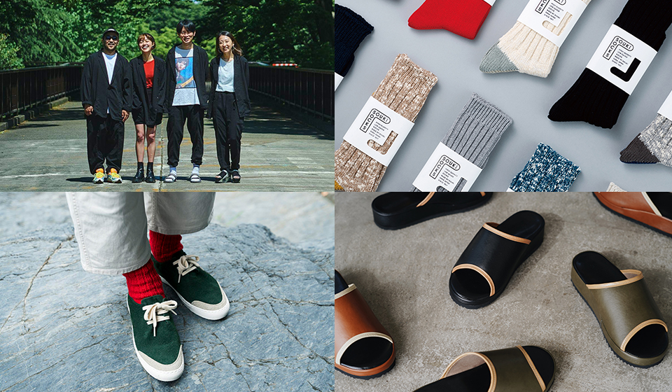
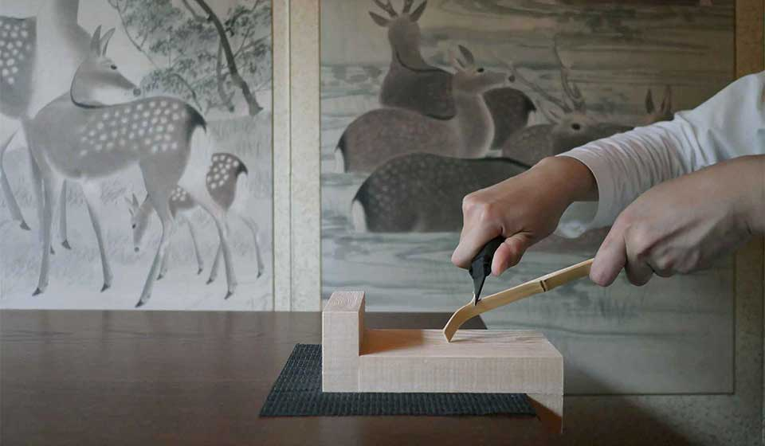
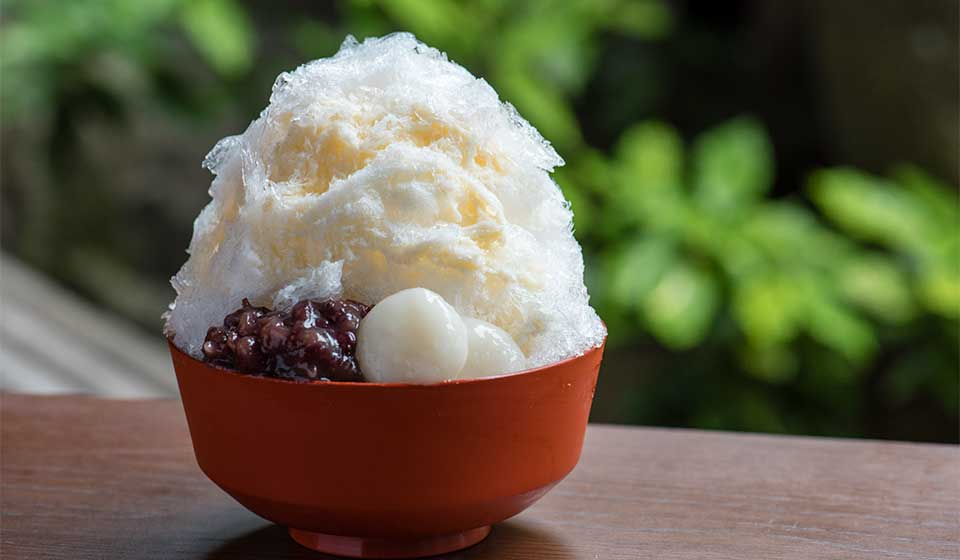
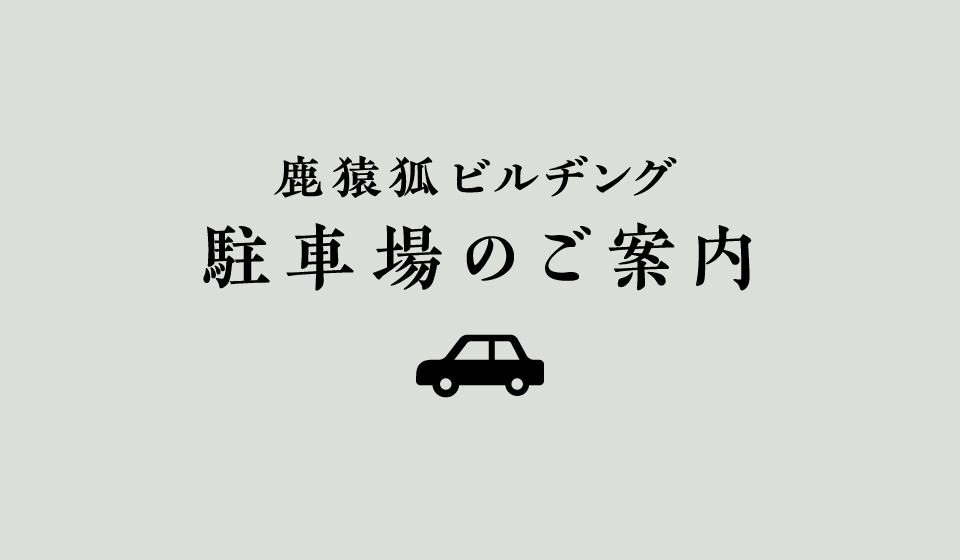

お知らせ

2021-07-16
-中川政七商店-奈良本店毎日着たくなる服と履物展・トークイベント

2021-07-16
茶杓削りワークショップ 開催のご案内

2021-07-16
かき氷、はじまりました。

2021-07-16
-鹿猿狐ビルヂング-近隣駐車場のご案内
お知らせ一覧
路地を巡り出会う、
触れ、学び、
味わう奈良。
猿沢の池越しに興福寺の五重塔を望み、少し坂を登れば春日大社、鹿がのんびり草を食むその奥には大仏様のいらっしゃる東大寺という、古き良き古都奈良の風景。
そのほど近く、細い路地が入り組んだ迷路のようなならまち元林院町にて、中川政七商店は300有余年商いを続けて参りました。
その創業の地に2021年春、新しい集いの場が生まれます。中川政七商店の鹿、猿田彦珈琲の猿、㐂つねの狐。3匹が集うこの建物を我々は「鹿猿狐ビルヂング」と名付けました。我々が共に志すのは、古きを学び進化し続けること。ふと気がつけばこの奈良という街もそうした進化を繰り返してきた場所です。
古の歴史の深さを垣間見せながら、同時におおらかで新しい。奈良に住まう人も訪れる人も、足を踏み入れた路地の先々で、そんな今の奈良に出会っていただけると思います。